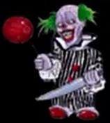
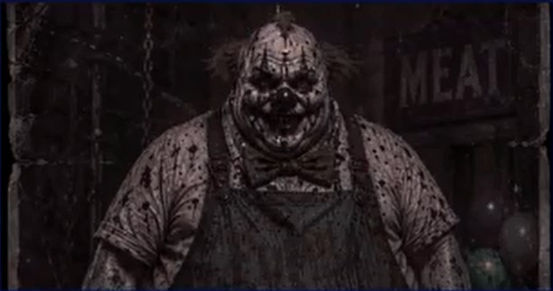

CLOWNS!
PUMBA
- YOSHI: MALUMOT YO'Q
- BO'YI: 1,88 SM
- NATIJA: 35TA ODAM

KO'RSATMALAR!
Bolaligida hamma uni semizligini ko'rsatib, ustidan kular, hayot unga yomonik ko'rsatar edi. Uni hech kim tushunmas, faqat rad etishar edi. Kunlardan birida shaharga kelgan sirli sirkning boshlig'i uni ko'chada topib oldi va oziga asrab olingan o'g'il qilib qabul qildi. boshliq uni ichida toplanib qolgan slar va g'azabini ko'rib, uni o'zining qorong'u jamiyatiga oldi va asta sekin shavqatsiz qotil klounga aylantira boshladi. Pumba yangi otasini mexrini qozonish va jamiyatdan och olish uchun uning eng ishonchli va qorqinchili ishtirokchilarindan biriga aylanib ulgurgan edi...